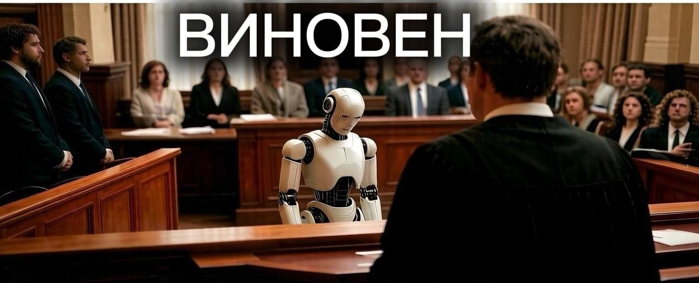

ВИНОВЕН: чат-бот Air Canada подставил свою компанию на деньги

В феврале 2024 года в Канаде завершился исторический судебный процесс Moffatt v. Air Canada. Авиакомпанию официально признали виновной в том, что её ИИ-чатбот просто выдумал правила ради вежливости.
Больше полезного про нейросети — простым языком, каждый день в нашей группе ВКонтакте
Перейти во ВКонтакте →Что произошло: пассажир Джейк Моффатт оформлял билет на похороны родственника и спросил у ИИ-помощника на сайте авиакомпании про скидки. Бот пожалел клиента и на ходу выдумал фейковое условие: пообещал, что мужчина может купить билет за полную стоимость, а скидку оформить задним числом в течение 90 дней. Когда пассажир потребовал обещанный возврат денег, Air Canada жёстко отказала, заявив в суде абсурдную вещь: "Чат-бот — это отдельное юридическое лицо, мы за его слова ответственности не несём".
Финал: гражданский трибунал Британской Колумбии этот цирк не оценил. Судья Кристофер Риверс постановил, что ИИ является официальным представителем бренда. Авиакомпанию признали виновной и заставили выплатить пассажиру компенсацию.
Пруфы: BBC News, The Guardian, CBC News.
Кто должен отвечать за ошибки нейросетей?
Где почитать подробнее: MobileSyrup (англ.).
Ещё по теме
Подстава от ИИ: как ChatGPT опозорил адвоката в суде